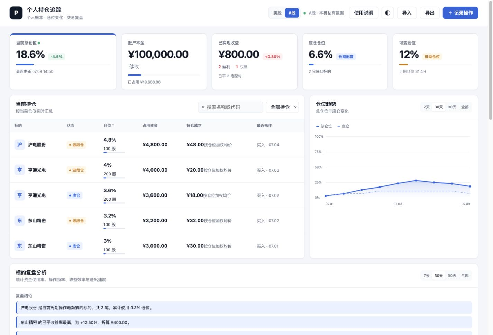
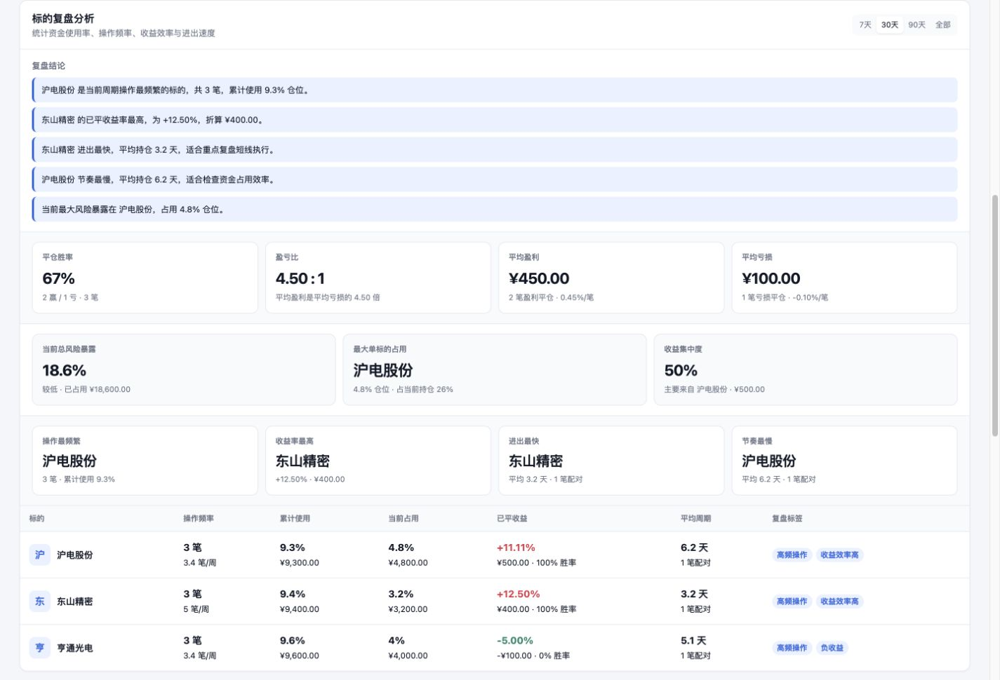

01
选择账户市场
顶部可以切换“美股”和“A股”。两个账户的数据互相独立。
- 美股：按仓位百分比记录，默认买入 10%。
- A股：按股数记录，自动用价格 × 股数 / 本金折算仓位。
- 美股默认美元，A股默认人民币，不需要手动切换币种。
3 分钟上手记录、查看和复盘自己的持仓
记录每次买卖，自动汇总当前持仓；把卖出和平仓批次配对，计算真实收益；长期复盘哪个标的效率更高、资金占用是否合理。
顶部可以切换“美股”和“A股”。两个账户的数据互相独立。
点击右上角“记录操作”，填写标的、操作类型、持仓类型、价格和仓位/股数。
下面示例使用东山精密、亨通光电、沪电股份三只 A 股测试。录入后会自动显示总仓位、占用资金、已实现收益、底仓仓位和可变仓位。

当你选择“卖出”时，系统会根据标的和持仓类型，自动显示可平仓的买入记录。
有买入和卖出后，系统会自动生成复盘指标。
卖出后会显示买入价、卖出价、平仓股数/仓位、单笔收益和总账户贡献。长期记录后，可以用这些数据判断策略质量。

当前持仓区可以搜索标的，也可以按“全部持仓 / 底仓 / 波段仓”筛选。
数据默认保存在当前浏览器。建议定期导出 JSON 文件作为备份。
不会。这个版本默认是“本机私有数据”，数据存在各自浏览器里。你朋友打开后是他自己的账本。
A 股有 100 股起买限制，用股数记录更符合真实操作；美股通常可以按金额或仓位管理，用仓位记录更轻。
胜率看“赚钱次数”，盈亏比看“赚一次能覆盖亏几次”。两者要一起看，单看胜率容易误判策略质量。
未登录时，数据只保存在当前浏览器。登录后，数据会保存到云端，同一账号在手机和电脑上可以同步。首次登录时，如果本机已有记录，可以选择迁移到云端。